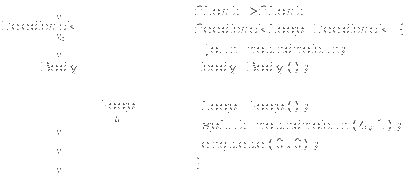

StreamIt Language Specification
Version 2.1
streamit@cag.csail.mit.edu
September, 2006
Table of Contents
1 Introduction
StreamIt is a language intended to simplify coding of
signal-processing and other streaming computations. The programmer
constructs a stream graph, containing blocks with a single input and a
single output, and describes the function of atomic blocks and the
structure of composite blocks. The compiler generates code for each
block, and applies optimizations to the stream graph to produce
efficient code for the target architecture.
The current implementation of the StreamIt compiler translates the
syntax described in this document to Java code, which can then be
either run against a Java library or compiled to C code and linked
with a runtime library. Since the compiler can reconstruct the stream
graph, it can combine adjacent filters, or split computationally
intensive filters into multiple parts, or duplicate filters to have
more parallel computation.
The StreamIt language is vaguely reminiscent of other imperative
languages such as C or Java. In particular, the bodies of filter work
functions and stream initialization code is generally legal Java
code.
2 Types
This section describes the various data and object types used in
StreamIt programs. Data types are passed along tapes between stream
objects, and can be used as local variables. Stream objects are only
created in initialization code and form a static stream graph.
2.1 Data Types
Data types are always created atomically. They are of fixed size, and
are generally statically allocated.
2.1.1 Primitive Types
The following primitive types exist in StreamIt:
-
boolean - Either
true or
false.
bit- A one-bit unsigned integer type, containing
the value
0 or 1.
int- A signed integer type, of unspecified length.
This length will typically be the native word length on the target
machine; for Raw and x86 compilation, this is usually 32 bits.
float- A floating-point type, of the best precision
that will give good performance. On x86 this is a double-precision
float, since computation with single-precision floats is implicitly
converted to double-precision; on Raw, this is single-precision,
since that is all that is supported in hardware.
complex- A floating-point complex type, of the same
precision as
float. This has real and imaginary parts,
which can be directly accessed with c.real and
c.imag.
A number of operations are supported on these primitive types; these
are listed in Table 1. In a binary or
ternary expression, if two expressions are of different primitive
types, they are promoted to the lowest type on the list above. Real
expressions converted to complex have an imaginary part of
zero. |, &, and ^ are bitwise or,
and, and exclusive-or operators, respectively; ! is a
boolean not. The boolean logic
operators && and || behave as in C: they are
short-circuiting, integer values of exactly zero are false, and other
values are true. == and other comparison operators return
a boolean value.
|
| Operators |
Types |
|
?: |
Any |
First part must be boolean |
|| |
int, bit, boolean |
&& |
int, bit, boolean |
|, &, ^ |
int, bit |
==, != |
Any |
<, <=, >, >= |
int, float |
+, - |
int, float, complex |
*, /, \lstinlineint|, float, complex |
\lstinline(cast)| |
Any |
! |
boolean |
++, -- |
int |
|
Table 1: Operators on primitive types
2.1.2 Structures
Named structures of heterogeneous data types are supported. A
structure must be of a fixed size. It contains a set of fields, each
of which has a name and a data type. Any primitive or array type, and
any structure type which has been previously declared in the program,
may be used; recursive structures are not allowed. The following two
structure definitions are both legal:
struct A {
int a;
int[4] b;
}
struct B {
A a;
A[4] b;
}
A structure definition contains the keyword struct, the name
of the structure, an open brace, a listing of field (variable)
declarations, and a close brace. It is not followed by a semicolon.
The only supported operations on structures are field references and
copying. Field references are of the form a.b; a must
be of some structure type A, and b must be a field named
in the structure declaration of A. The type of this expression
is the declared type of the field. Note that a similar syntax is used
for referencing the real and imaginary parts of complex numbers; there
is an implicit structure declaration
struct complex {
float real, imag;
}
along with some syntactic sugar to make complex arithmetic work.
Arrays of any data type described here are supported. Arrays must be
of a fixed length. Array types are written with the base type name,
followed by a single dimension in square brackets. Multi-dimensional
arrays or matrices are supported as arrays of arrays.
A portal is a special type of variable used for teleport messaging
(see Section 6). Portals allow control messages to
be sent to a set of filters with a given type. They are declared
using a template on that type: portal<FilterType>.
2.1.5 Variable Declarations
Variable declarations appear in structure declarations, as well as in
code blocks, static blocks and stream declarations. A variable
declaration may declare one or multiple variables, possibly with
initializers; multiple variables are separated with commas. Of note,
the syntax for array declarations is different from C and Java. A
correct declaration is int[4] rgbi;, with the entire type
stated before the variable name. A static array initializer may be
provided as in C and Java, for example:
int[3][2] arr = {{1, 2}, {3, 4}, {5, 6}};
2.1.6 Static Blocks
Read-only constants can be made visible to all streams in the program
by declaring them within a static block. A static block
contains one or more variable declarations, as well as an optional
init function to initialize data:
static {
float PI = 3.14159;
float[100] sqrtTable;
init {
for (int i=0; i<100; i++) {
sqrtTable[i] = sqrt(i);
}
}
}
Variables declared within a static block have global scope across the
current compilation unit. They are initialized at load time and
remain constant throughout the lifetime of the program. Thus,
variables declared within a static block are read-only outside of the
block.
2.2 Stream Types
Computation in StreamIt is performed within stream objects. Every
stream object has an input type and an output data type; the object is
connected to ``tapes'' of a hypothetically infinite number of
homogeneous data objects. Filters are atomic, and have
initialization code and steady-state work code; pipelines,
splitjoins, and feedback loops are all composite
structures that include some number of stream objects as children.
All stream objects have initialization code that runs when the object
is first created. For filters, this code may be omitted, and
generally just sets up filter-local state. For composite objects, the
initialization code is responsible for creating the child objects.
Filters also have one or more work functions, which are called
each time the filter executes.
I/O types.
Each stream declared at the top level must
also explicitly declare its input and output types. This is a
declaration like int->int or float->complex;
the first type is the stream's input type, the second its output type.
Either type may be void; in this case, the stream has no
input or output, as appropriate. If it is a filter, it must not
declare a peek, pop, or push rate. The top-level stream in a
program has type void->void; no other streams of this type
are allowed.
2.2.1 Stream Parameters
A stream may have a set of parameters provided to it. These
parameters are available to all functions within the stream type, and
may not be changed. Values for these parameters must be passed in
when the stream is created. Stream parameters are declared with types
and names in a parenthesized list after the name of the stream; when a
stream it instantiated, values for the parameters must follow the name
of the stream. For example:
// declaration
float->float filter MatrixMatrixMultiply(int A,
int B, int C) { ... }
void->void pipeline Toplevel() {
add Source();
// instantiation
add MatrixMatrixMultiply(3, 5, 4);
add Sink();
}
Note that it is also possible to pass a parameterized-length array as
a parameter to a stream, so long as the length is also passed as a
parameter. For example, the following is a legal filter declaration:
int->int filter FIR (int N, int[N] weights) { ... }
Compile-time constants.
Several things in StreamIt must
be compile-time constant; for example, the I/O rates of a
filter must be determined at compile-time, and the compiler must be
able to statically create the expanded stream graph. An expression is a
compile-time constant if it is a literal, a stream parameter, or an
expression whose components are compile-time constants.
2.2.2 Parameterized Stream Types
Stream types may be parameterized on some data type or types,
much like ``template'' types in C++. This may be used for
data-reordering operations, and is used for several cases of built-in
filters.
Parameterized objects cannot currently be created by the user. To
instantiate a built-in parameterized type, use the name of the stream
type, followed by the name of the data type in angle brackets, such as
Identity<int>.
- Note:
User-instantiated parameterized types are a future StreamIt
extension.
All computation in StreamIt takes place within filters. Filters must
explicitly declare their initialization code if present, but also have
the option of omitting it. A filter has a single work function.
The work
function must declare its I/O rates, the number of items
it removes, examines, or places on its tape. A basic filter
declaration looks like this:
int->int filter IntAvgFilter {
init {
// empty
}
work pop 1 peek 2 push 1 {
push(peek(0) + peek(1));
pop();
}
}
This filter is named IntAvgFilter; it reads integers off of its
input tape, and writes integers to its output tape. Each execution of
the work function removes exactly one item from the input tape and
examines at most two items; it causes exactly one item to be pushed on
to the output tape.
Init functions.
Init functions are declared using the
keyword init. They take no parameters. They may initialize
filter fields or do other work, but have no access to the filter's
tapes.
Filter state.
The top level of the filter may include
variable declarations. These variables are visible to every function
in the filter, and may be used to carry state between iterations of
the work function. We refer to these variables as fields
of the filter. For example, the variable i is a field of
the following filter:
void->int filter Counter {
int i = 0;
work push 1 {
push(i++);
}
}
Work functions.
Work functions are declared using the
keyword work, which must be followed by rate declarations.
Rate declarations consist of push rate-expr,
peek rate-expr, and pop rate-expr,
in any order. The push and pop rates specify the number of items
produced and consumed by a given execution of the work function. The
peek rate specifies the maximum index that is peeked in a given
execution; that is, given a peek rate of r, the filter can execute
peek(i) for all i < r.
Each rate expression is of the form [min, avg, max], where
min denotes the minimum number of items, avg
denotes the average number of items (over all executions), and
max denotes the maximum number of items. The average rate
may optionally be ommitted, in which case the rate declaration is of
the form [min, max]. If only one expression appears, then
it represents both the minimum and maximum rate (i.e., the rates are
equal); in this case, the brackets are ommitted. For example, a work
function that pops exactly 1 item and pushes between 2 and 4 items,
with an average of 3 items, is declared as follows:
work pop 1 push [2, 3, 4] { ... }
The declaration above signifies a dynamic rate in that the exact
number of items produced on any given execution is unknown at compile
time.
Rate declarations support two forms of dynamism:
There is also some syntactic sugar for rate declarations:
- If the push or pop rate is omitted, it is assumed to be zero.
The corresponding input or output tape type must be
void.
- If the peek rate is omitted, it is assumed to be equal to the
pop rate.
- If the peek rate is specified, it should not be smaller than the
pop rate.
Prework Functions.
A filter may specify an additional work
function that is run in place of the normal work function the first
time the filter executes. This function uses the prework
keyword, and is otherwise identical to the normal work function.
Prework functions can be very useful for setting up initial conditions
based on the first set of inputs, or for pushing extra items on the
first invocation. For example, consider the following implementation
of a Delay:
float->float filter Delay(int N) {
prework push N {
for (int i=0; i<N; i++) {
push(0.0);
}
}
work push 1 pop 1{
push(pop());
}
}
Limitations on work and prework functions
The push, peek, and pop expressions
in the declaration of a work or prework function
must be correct for the compilers to produce correct output. These
declarations can not, in general be statically checked. They are
dynamically checked in the library back end, but are not
checked at all in the compiled back ends. An incorrect single numeric value
for one of these expressions may cause obscure bugs in the compiled
code, as may an incorrect maximum value for a range.
Helper functions.
A helper function performs some
auxiliary bit of computation, and may be called from the init function
or the work function. A helper function has a list of zero or more
parameters, and returns zero or one values. A helper function
declaration contains the return type, the name of the function, the
parameter list, and the function body, just like a normal C or Java
function.
Helper functions may also access the I/O tapes using peek,
pop, and push, in which case they must declare
their I/O rates just like the work function. The declared rates
represent all I/O operations performed by the filter between the start
and end of the function (including operations in other functions that
are called by the given function). For example:
// produces a square wave with period 2*N
void->float filter SquareWave(int N) {
work push 2*N {
pushZeros();
pushOnes();
}
void pushZeros() push N {
for (int i=0; i<N; i++)
push(0.0);
}
void pushOnes() push N {
for (int i=0; i<N; i++)
push(1.0);
}
}
Message-handler functions.
A message handler function
changes the state of the filter in response to some external event,
delivered via a message. It is declared with the keyword
handler, the name of the message, the parameter list, and
the function body. A message handler cannot return a value, so no
return type is declared. See Section 6 for more
details on messaging.
The simplest composite stream is a pipeline. A pipeline contains a
number of child streams; the output of the first stream is connected
to the input of the second, whose output is connected to the input of
the third, and so on. A pipeline declaration looks like
float->complex pipeline FloatToComplexAdd {
add ReImToComplex();
add ComplexPairAdd();
}
The body of the pipeline declaration is the initialization code; no
internal function declarations
are allowed. In addition to the internal typing constraints mentioned
previously, the input type of the pipeline must match the input type
of the first filter, and the output type of the pipeline must match
the output type of the last filter.

Figure 1: Pipelines
2.2.5 Splitjoins
A splitjoin allows computation to be run in parallel, possibly using
different parts of the input stream. It is so named because incoming
data passes through a splitter, is redistributed to the child
streams for processing, and then is fed through a joiner to be
recombined into a single output stream; see section
2.2.7.
int->int splitjoin AddAndSub {
split duplicate;
add IntAdder();
add IntSubtractor();
join roundrobin;
}
This splitjoin has two children. Incoming data is duplicated onto
both streams. The first branch consumes two elements and adds them;
the second consumes two elements and subtracts them. The resulting
values are then pushed onto the output stream in a round-robin
fashion, with values from alternating streams.
2.2.6 Feedback Loops
A feedback loop has a body stream. Its output passes through a
splitter; one branch of the splitter leaves the loop, and the other
goes to the loop stream. The output of the loop stream and the loop
input then go through a joiner to the body's input.
float->float feedbackloop AddFeedback(float scaling) {
join roundrobin;
body FloatAdder();
loop FloatScaler(scaling);
split duplicate;
enqueue 0.0;
}
The body and loop declarations may be omitted;
if so, an implicit Identity filter of the appropriate type
is inserted.

Figure 3: Feedback Loop
Semantics of splitters and joiners.
Splitters and joiners
both treat the stream input as the first child, and the loop edge as
the second child. Splitters and joiners that do not allow exactly two
children are disallowed.
enqueue statement.
The enqueue
statement takes a value and places it in FIFO order on the output tape
from the loop stream. You will generally need to enqueue enough items
that the input joiner will be able to fire once; enqueuing more items
causes a delay in the feedback loop.
2.2.7 Splitters and Joiners
Splitters have a single input tape and multiple output tapes; joiners
have multiple input tapes and a single output tape. They appear in
feedback loops and splitjoins.
duplicate Splitters.
duplicate
splitters take each incoming item and push the same item to each of
the outgoing tapes, duplicating data.
roundrobin Splitters and Joiners.
roundrobin
splitters take each item and send it to exactly one of the child
streams, in order. Either roundrobin or
roundrobin() causes one item to be sent to each output, in
order; roundrobin(2) causes two items to be sent to the
first stream, two to the second, and so on. roundrobin(2, 4,2)
requires there to be exactly three children, and sends two to
the first child, four to the second, and two to the third. A
round-robin weight may be 0; in this case, the child input must be of
type void. A roundrobin(0) splitter on a
splitjoin means that no children take any input, and the input type
of the entire splitjoin is void.
roundrobin joiners are identical to roundrobin
splitters, except that they read from the input tapes in the specified
pattern and write data to the output tape.
2.2.8 Anonymous Streams
It is possible to declare a stream object without a name, if it is
used in exactly one place in the program. In general anonymous stream
declarations look exactly like the corresponding normal stream
declaration, except that the stream type is optional for non-filter
streams and the name is omitted. The semicolon that normally ends the
add, body, or loop statement is
optional in this case.
complex->float feedbackloop FeedbackMagnitude(float scaling) {
join roundrobin;
body complex->float filter {
work pop 2 push 1 {
push(abs(peek(0) * peek(1)));
pop(); pop();
}
};
loop pipeline {
add float->float filter {
work pop 1 push 1 { push(pop() * scaling); }
};
add FloatToComplex();
};
split duplicate;
}
The input and output types of anonymous streams are determined by the
compiler, if these types are not explicitly specified in the code.
Anonymous streams do not have stream parameters. In certain cases,
though, code within anonymous streams can access variables and stream
parameters from the containing stream. Values so referenced must be
compile-time constant. Fields of the containing stream cannot be
accessed, and local variables and stream parameters in the containing
code cannot be modified.
2.3 Execution Model
StreamIt does not explicitly assume sequential or parallel hardware.
A component of the stream graph may fire, possibly in parallel
with other firings, if its conditions to execute are met. The
scheduler in the compiler chooses an order to execute filters such
that the firing conditions are met. A particular back-end may place
additional restrictions on firings; a uniprocessor back-end may
require that only one stream object executes at a time, or a parallel
back-end might add the constraint that two objects may not both be
executing if the output of one is an input of another. These
constraints are transparent to the programmer, however.
-
A filter may fire when its input has at least as many items as
its peek rate.
It pops its pop rate from the input, and pushes its push rate onto
its output.
- A joiner in a feedback loop or splitjoin may fire when the
specified number of items are available on each of its inputs. It
pushes the sum of the input weights onto its output.
- A round-robin splitter may fire when the sum of the number of
output items is available on its input, and produces the specified
number of items on each output.
- A duplicate splitter may fire when at least one item is
available on its input. It pops one item from its input and pushes
one item to each output.
The programmer should think of each work function as firing
atomically. However, the compiler may choose to run filters in
parallel, or to interleave certain work functions (this is sometimes
necessary in the case of unbounded I/O rates). Such transformations
will not be observable unless the programmer uses print
statements (the only function with side effects) within multiple
filters.
3 Statements
This section describes statements legal in StreamIt code. For the
most part, these are identical to legal statements in C or Java. Some
statements, particularly those that set up the stream graph, are only
legal in initialization code; other statements are legal anywhere.
3.1 Initialization-Only Statements
3.1.1 add Statement
The add statement adds a child stream to the current stream
object. It is valid in splitjoins and pipelines only. In a
splitjoin, it adds a new stream to the end of the current list of
children. In a pipeline, it adds a new stream to the end of the chain
of children.
This statement takes a stream constructor; see section
4.2.
3.1.2 body Statement
The body statement adds a child stream as the body part of
a feedback loop. This statement must be executed at most once in the
initialization code of a feedback loop, and is invalid anywhere else.
If a feedback loop does not contain a body statement, an
Identity filter of the appropriate type is used by
default.
This statement takes a stream constructor; see section
4.2.
3.1.3 enqueue Statement
The enqueue statement is valid only within the
initialization code of a feedback loop. It causes the specified item
to be placed after all other previously enqueued items on the input to
the feedback loop joiner. This statement takes a single value
expression.
3.1.4 join Statement
The join statement declares the joiner type of a feedback
loop or splitjoin. It only appears in initialization code, and is
invalid in initialization code for any other construct.
3.1.5 loop Statement
The loop statement adds a child stream as the loop part of
a feedback loop. This statement must be executed at most once in the
initialization code of a feedback loop, and is invalid anywhere else.
If a feedback loop does not contain a loop statement, an
Identity filter of the appropriate type is used by
default.
This statement takes a stream constructor; see section
4.2.
3.1.6 split Statement
The split statement declares the splitter type of a feedback
loop or splitjoin. It only appears in initialization code, and is
invalid in initialization code for any other construct.
3.2 Work and Helper Statements
These statements may appear only within work or helper
functions.
3.2.1 push Statement
The push statement takes a value expression and pushes its
value onto the output tape of the current filter. The type of the
expression must match the output type of the filter.
3.2.2 Message-sending Statements
As detailed in Section 6, filters can exchange
control messages by invoking methods on portal variables. The syntax
of this is like a Java function call: the portal variable name is
followed by a period, the name of the message handler, and a parameter
list. There is also an optional latency range enclosed in brackets.
3.3 General-use Statements
These statements may appear anywhere code is legal.
3.3.1 Statements with Java-like Semantics
do, for, and while loops have the same
syntax and semantics they do in Java. The continue and
break statements are also recognized, though they may not
take a label reference.
For statements whose syntax match exactly
for (i = S; i < N; i++)
/* body */ ;
cause the induction variable i to be compile-time constant
within the loop if the start and end indices S and N are
also compile-time constant.
3.3.2 Assignment Statements
Assignment statements have the form lhs = expr;. The left-hand
side may be a variable, a field reference, or an array element
reference. Each of these is evaluated to a location, with the result
being either a primitive value, a structure, or an entire array. If
it is a primitive value, the right-hand side must be a value
expression. Otherwise, the right-hand side must be an array or
structure of identical type, and causes all of the elements from the
right-hand-side object to be copied to the left-hand-side object.
3.3.3 Variable Declarations
Variable declarations have the form type name;. type
must be a data type; name may be any legal name not
corresponding to another variable previously declared in the current
block. A declaration must appear before the variable is used. The
variable declaration may also contain an initialization, as in
type name = expr; The initialization acts exactly as an
initialization statement, above.
Variables declared without initialization are initialized to 0 as best
as possible. complex variables are initialized to
0+0i. Each element of an array variable is initialized to
0 as described here. Similarly, each field of a structure variable is
initialized to 0 in the same way.
4 Expressions
4.1 Value Expressions
A value expression carries some value of a data type. Literal
values are value expressions; these can be signed integer or real
values, e.g. 17, 2.45, or 1.4e6. A literal value
can also be a pure imaginary number, e.g. 17i or 3.4i.
Unary, binary, and ternary expressions of value expressions are also
value expressions, as described in section 2.1.1. Thus,
while 3+4i is not a literal, it is a valid value expression of
complex type.
Field references to structure objects are also value expressions.
These have the form a.b, where a is a variable of
structured type A and b is a field in A.
Similarly, array references a[b] are value expressions;
a must be an array variable, and b must be an
integer-valued value expression.
4.1.1 peek and pop
The peek and pop expressions look at items on
the incoming tape in a filter's work or helper functions; they are
illegal in init or message-handler functions. peek(n)
examines the n-th item on the tape without removing it;
peek(0) returns the next incoming item,
peek(1) the one afterwards, and so on. pop()
returns the same item peek(0) returns, but also removes it
from the tape.
- Note:
There is not a guaranteed evaluation order for StreamIt expressions,
and the implementation of
pop() in C doesn't give any
guarantees for when the item is actually removed from the tape. Thus,
an expression should contain no more than one pop(), and
if there is one, there should be no peek()s.
Note that pop() removes an item from the tape, so
peek()s afterwards use different indices. A function may
not peek at more items than it declares in its rate declaration,
though it may peek at fewer. The peek declaration declares the
furthest position on the tape examined from the point of view of the
beginning of the function.
int->int filter PeekRates {
work pop 1 peek 3 push 1 {
int a, b, c, d, e;
a = peek(0);
b = peek(1);
c = pop(); // Same value as a
d = peek(0); // Same value as b
e = peek(1);
push(a + b + c + d + e);
}
}
This function pops one item and pushes 1. It declares a peek rate of
3 because e peeks at the third item that was on the tape
at the start of the function -- one is popped, and e
contains the second item beyond that.
4.1.2 Function Calls
Function calls are value expressions; certain cases of built-in
functions may return values that are compile-time constant if their
parameters are compile-time constant. The function call syntax
fn(p1, p2) is identical to that of Java. All parameters
are passed by value, with all elements of structures and arrays
implicitly copied across a call; this differs from Java's semantics,
in which the value passed is a reference (i.e., a pointer) to each
object and array parameter.
Function calls may be made to declared helper functions, or to
built-in math functions. The math functions are listed in Table
2.
- Note:
As an implementation detail, any function name not optimized as a
built-in function in the front-end or recognized as a helper function is treated as a call to a function in the Java
package
java.lang.Math; see Java in a Nutshell or
another Java reference for details. These get blindly translated
again to calls to the C math library.
- Note:
It is conceivable that calls to side-effect-free functions with
compile-time constant parameters return compile-time constant
results. This is only the case for built-in functions in the
current implementation of the compiler; adding this involves
inlining helper functions, and doing analysis to determine if a
helper is in fact side-effect free.
|
| abs(v) |
Real absolute value or complex magnitude |
| arg(v) |
Polar angle of complex value |
| exp(v) |
Real or complex exponent |
| log(v) |
Real or complex natural logarithm |
| sin(v) |
Real or complex sine |
| cos(v) |
Real or complex cosine |
| sqrt(v) |
Real or complex square root |
| csqrt(v) |
Complex square root |
|
Table 2: StreamIt Math Functions
If a primitive type in parentheses precedes an expression, that
expression is interpreted as being of the particular type. See the
listing of types in Section 2.1.1. Conversions to
types later in the list take place in the obvious way:
boolean values convert to bit values with 0
for false and 1 for true, bit
values convert to int values with the same value, and so
on. float values convert to complex values
with an imaginary part of 0. Conversions to types earlier in the list
may lose data; conversions from complex are not possible,
bit converts to boolean in the obvious way.
The exact conversion from float to int is not
specified. int values of 0 convert to bit
values of 0, and other int values convert to 1.
/* For each input, pushes (float) 1 if the integer representation
* of the input has the 64-bit set. */
float->float filter TypeCast {
work pop 1 push 1 {
complex c = (complex)pop();
float f = abs(c); // can't directly cast from complex
int i = (int)f;
bit b = (bit)(i & 64);
push((float)b);
}
}
4.2 Stream Constructors
A stream constructor indicates that a new stream object should
be created. Stream constructors appear in add,
body, and loop statements in composite stream
initialization code.
Stream constructors may reference an already-declared stream type. In
this case, the stream constructor form is Name(param,...).
There must be exactly as many parameters in the constructor as
parameters for the stream type.
An anonymous stream declaration is also a valid stream constructor;
see section 2.2.8. A statement containing an
anonymous stream declaration does not need to be terminated with a
semicolon, since it ends with a close-brace.
A stream constructor may be followed by the keyword to and
the name of a portal variable. This causes the newly created stream
to be registered with the named portal. See
Section 6 for details.
5 Built-in Types
This section describes built in data and stream types in StreamIt.
These types are implicitly declared; code can just use these types
without explicitly importing or otherwise declaring them.
5.1 Built-in Data Types
The complex type is actually implemented as a structure,
though the compiler implements syntactic sugar for complex variables.
The structure definition is shown above in section
2.1.2.
It is legal to explicitly reference the real and
imag fields of complex numbers as though they were the
structure type instead.
5.2 Built-in Streams
Several stream types are in common use, and are either simple enough
or require non-standard language functionality that the compiler
should support them directly. These include parameterized
Identity, FileReader, and FileWriter types, as
shown in figure 4.
template<T> T->T filter Identity {
work pop 1 push 1 { push(pop()); }
}
template<T> void->T filter FileReader
(string filename) {
work push 1 { /* Implementation defined */ }
}
template<T> T->void filter FileWriter
(string filename) {
work pop 1 { /* Implementation defined */ }
}
Figure 4: Built-in Stream Types
6 Teleport Messaging
It is sometimes necessary to send occasional messages outside of the
normal stream data flow. A radio application might contain an in-band
signal requesting a change in the listening frequency, for example;
this signal would happen infrequently, but it would be detected by a
filter late in the application and require a change in a filter early
in the application. StreamIt provides an out-of-band messaging system
called ``teleport messaging'' to accomodate this sort of application.
Only filters can receive messages. The possible messages are defined
by message handler functions; these functions have the keyword
handler in place of their return type. A message is sent
to a portal, which can have multiple targets registered with
it.
6.1 Portals
A portal is a special type of variable. It is associated with a
single message receiver type; the full type name is
portal<ReceiverType>. Unlike other variables in StreamIt,
portals are passed by reference in stream parameters. Declaring a
portal as a local variable, and then passing that as a parameter to a
child stream which adds a filter to the portal, results in the filter
also being added to the portal in the original container. When a
filter is created, it may be added to a portal by adding the keyword
to and the portal variable to the end of the declaration
(see Section 6.4 for an example).
6.2 Sending and receiving messages
Work or helper functions may send messages through portals. This
looks like a function call in Java: the portal name is followed by a
period, the message name, and a parenthesized parameter list. This
may, optionally, be followed by a message latency, which specifies the
minimum and maximum delay to receive the message. The latency
specification is an open bracket, a minimum latency, a colon, a
maximum latency, and a close bracket. If the latency specification is
omitted, the default message latency is zero (for both the minimum and
maximum).
For each filter that receives messages, the runtime system maintains a
queue to hold incoming messages. This queue is checked prior to each
execution of the work function; any messages in the queue are
dispatched to the appropriate message handlers.
6.3 Message timing
Messages sent with a fixed latency (i.e., the minimum and maximum
latencies are equal) on a given execution of the sending filter will
always arrive at a given execution of the receiving filter. This
deterministic property holds even if the compiler is parallelizing or
reordering the filters at runtime. Messages sent with a range of
latencies (i.e., the minimum and maximum latencies are different) are
sent as if some latency is chosen from within the range on every
message invocation.
For each pair of message senders and receivers, there must be a
directed path in the stream graph from one filter to the other
(messages cannot be sent between filters on parallel paths in a
splitjoin). We refer to the filter at the start of this path as the
upstream filter, and the filter at the end of this path as the
downstream filter.
Messages are timed relative to a pull schedule. A pull schedule
corresponds to a sequence of atomic filter firings. For each pair of
message senders and receivers, a pull schedule executes the upstream
filter as few times as possible for each execution of the downstream
filter. This corresponds to a fine-grained execution with the minimal
amount of buffering between filters. While the runtime system may
deviate from the pull schedule, it must time the delivery of messages
as if the pull schedule is in effect.
Assuming execution under a pull schedule, messages sent with default
(zero) latency are immediately added to the message queue of the
target stream. Non-zero latencies are measured in terms of filter
executions. If a filter sends a message with latency k during its
nth execution, the outcome is equivalent to sending a message with
latency 0 during its n+kth execution.
Message latencies can be interpreted as follows. If the message is
sent in the direction of dataflow (from an upstream node to a
downstream node), a positive latency indicates that the message is
synchronized with some data that the message sender will produce in
the future. Likewise, a negative latency synchronizes the message
with some data that the message sender produced in the past.
If a message is sent opposite the direction of dataflow (from a
downstream node to an upstream node), a positive latency synchronizes
the message with some data the message sender will consume in the
future. In this case, negative latencies are illegal (they correspond
to data consumed by the message sender in the past).
6.4 Messaging Example
The following code uses teleport messaging to count in sequence:
void->void pipeline Counter {
portal<Sink> p;
add Source(p);
add Sink to p;
}
void->int filter Source(portal<Sink> p) {
int i = 1;
work {
push(0);
p.count(i++);
}
}
int->void filter Sink {
int output = 0;
work {
pop();
print(output);
}
handler count(int val) {
output = val;
}
}
When run for 6 iterations, the code above outputs ``123456''. The
pull schedule executes the Source and Sink in alternation. On the
first execution of the Source, a count() message is sent
to portal p with the default latency of zero. The message is
immediately added to the Sink's incoming message queue. Thus, when
the Sink executes, it checks the queue and handles the message before
executing work, thereby updating its output variable
before it is printed to the screen.
Suppose that the message was sent with a latency of 1 instead of 0:
void->int filter Source(portal<Sink> p) {
int i = 1;
work {
push(0);
p.count(i++) [1:1];
}
}
In this case, the program outputs ``012345'' because the message was
effectively sent one iteration later.
7 History
7.1 StreamIt 2.1
Adding support for dynamic rates, teleport messaging, static sections,
and prework functions.
7.2 StreamIt 2.0
The first formal language specification for StreamIt documented
StreamIt 2.0. Version 2.0 of the language adds a completely new
syntax with simplified constructs for declaring stream objects but
keeping a Java-like syntax for the bodies of init and work functions.
It also changes
from delay functions to enqueue statements in feedback
loops. The null splitter/joiner type was replaced with
roundrobin(0).
7.3 StreamIt 1.0
The initial StreamIt compiler was based on a restricted subset of
Java, dubbed StreamIt 1.0. This version of the language used pure
Java syntax for stream constructs, and was compilable with a normal
Java compiler given an appropriate run-time library. Early
publications referred to the language as StreaMIT, but this
capitalization is now deprecated.
This document was translated from LATEX by
HEVEA.